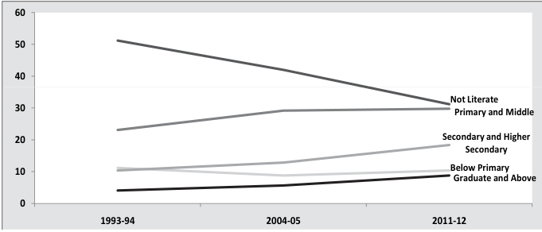

| Year | Not Literate | Primary and Middle | Secondary and Higher Secondary | Below Primary | Graduate and Above | | :--- | :--- | :--- | :--- | :--- | :--- | | 1993-94 | ~52 | ~23 | ~10.5 | ~6 | null (not visible) | | 2004-05 | ~38 | ~29 | ~12 | ~7 | ~6 | | 2011-12 | ~31 | ~30 | ~18 | ~10 | ~9 |
